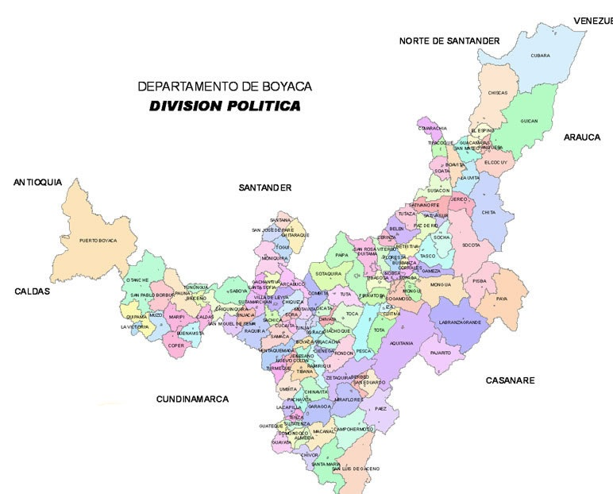
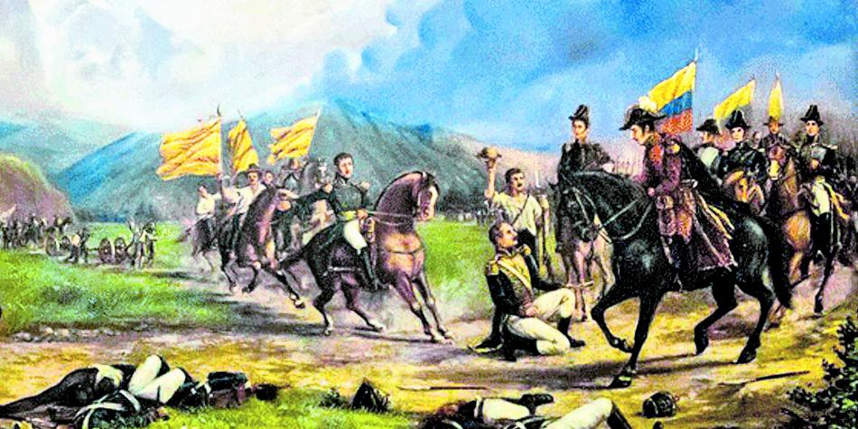
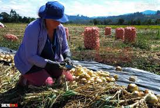
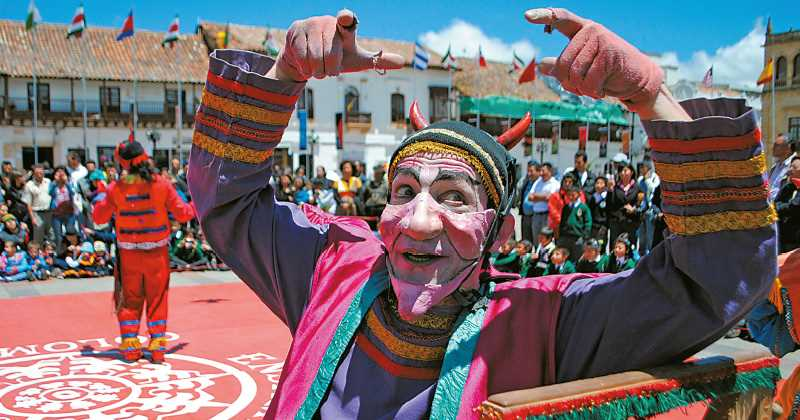
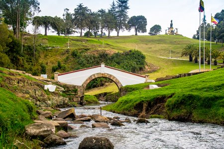

DEPARTAMENTO DE BOYACA
MAPA DE BOYACA

HISTORIA DE BOYACA
La historia de Boyacá está ligada a la cultura muisca, quienes habitaban la región antes de la llegada de los españoles en el siglo XVI. Durante la colonia, Boyacá fue un importante centro agrícola y religioso, con ciudades como Tunja.
El momento más destacado de su historia fue la Batalla de Boyacá el 7 de agosto de 1819, donde el ejército de Simón Bolívar logró la independencia de Colombia. Desde entonces, Boyacá ha sido reconocido como el "altar de la patria".
En los siglos XIX y XX, Boyacá se consolidó como una región agrícola y minera, destacando en la producción de papa, maíz, y esmeraldas. Hoy es un importante destino turístico y sigue siendo clave en la economía agrícola y minera del país.

ECONOMIA DE BOYACA
La economía de Boyacá es principalmente agrícola y minera. El departamento es uno de los mayores productores de papa, maíz, cebolla y otros cultivos en Colombia. También destaca por su producción de carbón y, sobre todo, por la extracción de esmeraldas, siendo uno de los principales productores a nivel mundial.
El sector ganadero también es importante, con la producción de leche y carne. En los últimos años, el turismo ha crecido significativamente, especialmente en ciudades históricas como Villa de Leyva y el Puente de Boyacá.
En resumen, la economía de Boyacá es una mezcla de agricultura, minería y turismo, con un creciente interés en el desarrollo sostenible de estos sectores.

CULTURA DE BOYACA
La cultura de Boyacá combina sus raíces indígenas muiscas con el legado colonial. Es conocida por su música tradicional, como el torbellino y el bambuco, además de festividades religiosas como la Semana Santa en Tunja. La gastronomía incluye platos típicos como el cocido boyacense y la arepa boyacense.
Boyacá también se destaca por su artesanía, especialmente en Ráquira, famosa por su cerámica, y por sus tejidos y trabajos en madera. Las festividades como la Navidad y el Festival de Luces en Villa de Leyva son parte importante de su cultura.

TURISMO DE BOYACA
El turismo en Boyacá es muy diverso y atractivo, gracias a su riqueza histórica, cultural y natural. El departamento es conocido por sus paisajes andinos, pueblos coloniales y sitios históricos clave en la independencia de Colombia.
Uno de los destinos más populares es Villa de Leyva, un pueblo colonial con calles empedradas y arquitectura bien conservada. Aquí se celebran eventos como el Festival de Luces y el Festival del Viento y las Cometas. Cerca de Villa de Leyva, se encuentran sitios naturales y arqueológicos como el Parque Arqueológico de Monquirá (El Infiernito) y el Desierto de la Candelaria.
Otro sitio clave es el Puente de Boyacá, un monumento histórico donde tuvo lugar la batalla que selló la independencia de Colombia. Este lugar es de gran relevancia para el turismo patriótico.
El Páramo de Ocetá, en Monguí, es uno de los páramos más hermosos del país, ideal para el turismo ecológico, con paisajes únicos de frailejones y montañas. Monguí, conocido por su fabricación de balones, también es un atractivo turístico por su arquitectura colonial.
Paipa es famoso por sus aguas termales y el Lago de Tota, el lago navegable más grande de Colombia, con playas como la de Playa Blanca.
En resumen, Boyacá es un destino que ofrece una combinación de turismo histórico, cultural, ecológico y de bienestar, atrayendo a visitantes que buscan disfrutar de su rica diversidad.
